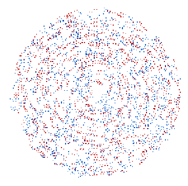

PSYC2016: Attention Lecture 3
2023-08-26
Lecture 2 CLEAN-UP and REVIEW
Didn’t understand:
Location selection; can we get a demo for it like feature selection?
Didn’t understand:
Will the entire textbook be assessed?
Yes but it’s short.
The different brain regions responsible for object and feature selection
You don’t need to know that.
Quiz question from Lecture 1
why didn’t see second letter
Why was “I missed that” the right answer
Bottleneck
Limited processing capacity
## Bottom-up attention
- Salience computation
- Neurons tuned to the same feature inhibit each other
- Added a new paragraph on this to 5.0
Features
- Feature dimensions include color, motion, orientation
- Color feature values include red, green, blue
- Motion feature values include leftward, downward
Review of feature processing
- Within a feature dimension, salience computation occurs in parallel
- e.g. unique color target is salient, unique motion target is salient
- Across dimensions, feature binding is slow.
Between-dimension binding is slow
Between-dimension binding is slow
Possibly doesn’t occur unless selective attention routes the features through the bottleneck.
Gif not rendering?
What about binding within a feature dimension?
- Within-feature salience is computed pre-bottleneck (Chapter 5)
- That’s differencing
- What about binding parts together into a larger shape?
Shape
Involves combining elements of a single feature dimension: orientation
Combining oriented elements into a shape: Sometimes hard
 ## Combining oriented elements into a shape
## Combining oriented elements into a shape
Combining oriented elements into a shape
## Combining oriented elements into a shape
Brain has to combine elements across shape in a sophisticated way. - Cues for occlusion - Next: averaging out noise
Quantitative assessment
Dipole = two dots, defines an orientation
Circular or radial?
Circular or radial?
Circular or radial?
Circular or radial?
Combining many required if add lots of randomly-spaced dots
40% of the dipoles randomly-oriented
Lots of the dipoles are randomly-oriented
Summation
Shapes: clockwise and anti-clockwise spirals
Shape processing: speed
Two anti-clockwise in alternation
Two in alternation, and sum of the two

Rapid alternation
Rapid alternation
- Can still perceive even at 30 images per second
- Implies that shape is computed in less than 0.06 sec
Pairing shape with color
- green radial signal dots; red noise dots
Pairing shape with color
- Takes time to determine which dots form the shape and which are random
- Suggests attentional scrutiny is required
Pairing shape with color
Signal dots one color, noise dots another color

Quantifying binding cost
Percentage signal dots needed to perceive shape*color combination is:
- higher than percentage needed for shape alone
- higher than percentage needed for color alone
- e.g., 10% to perceive shape and 20% to perceive shape-color combo (Seymour, McDonald, Clifford, 2009)
Pairing shape with color
Signal dots are one color, noise dots are another color
::: notes ::: Blue signal red noise :::
Pairing shape with color
Signal dots are one color, noise dots are another color
 ##
Shape extractor does not preserve color information
This is already
Orientations get bound together but not with color.
Shape take-aways
- Binding of individual orientations into single global shape is fast and may occur before bottleneck
- Color is processed independently, even though all the signal dots are that color
Feature binding / pairing
- Pairing different feature
- Color with motion
- Color with shape
- I suggested that the reason is a need to bring together separate neural populations
- Might only occur post-bottleneck
Mobile computation?
Binding motion vectors together also
Alex White words paper
Bottom-up and top-down selection
Deciding which info goes hrough the bottleneck
Remember this?
How is info prioritized at the bottleneck?
- Bottom-up / endogenous / stimulus-driven salience
- Current plans
- Automatic routines
- reading
Reading-order prioritisation
## Reading-order prioritisation
Reading-order prioritisation
The mirror-reversed condition of Holcombe, Nguyen, & Goodbourn (2017)
CHANGE BLINDNESS QUESTIONS should put on Mentimeter
Attention2SocrativeResponses.pdf
Consciousness and attention
Global Neuronal Workspace theory: “Attention and consciousness are the same process”
– David Alais’ slide #40 of Consciousness lecture 2
DISTRACTION
What most distracts you doing lecture?
::: notes Some of these are bottom-up sensory events Some are ongoing life concerns (top-down) Some are basic drives (hunger) :::
All day, the world makes its demands. There’s so much of it, world
begging to be noticed.
ultrawhelmed sensorium, my self
taxed with being a self, brimming with living’s rowdy mechanics and disruptions unremitting, a thought flits by, then another (an unpaid bill, a jingle’s tenacious refrain)—and, … I attend, as best I can,…
yielding to the most persuasive god, the most recent, to each thing I say Yes? Yes!— zealot of whatever calls me next.
Ezra Klein wrote beautifully about this situation this week in the New York Times:
Gloria Mark, a professor of information science at the University of California, Irvine, and the author of “Attention Span,” started researching the way people used computers in 2004. The average time people spent on a single screen was 2.5 minutes. “I was astounded,” she told me. “That was so much worse than I’d thought it would be.” But that was just the beginning. By 2012, Mark and her colleagues found the average time on a single task was 75 seconds. Now it’s down to about 47.
This is an acid bath for human cognition. Multitasking is mostly a myth. We can focus on one thing at a time. “It’s like we have an internal whiteboard in our minds,” Mark said. “If I’m working on one task, I have all the info I need on that mental whiteboard. Then I switch to email. I have to mentally erase that whiteboard and write all the information I need to do email. And just like on a real whiteboard, there can be a residue in our minds. We may still be thinking of something from three tasks ago.”
Individual differences
- What do we know?
- You’re going to be disappointed
Demonstration: studying humans requires getting lots of data
- Data is noisy
- Need multiple humans or lots of trials
Time perception mini-study
Give your answer
https://forms.gle/yy3NXtMfXxJESzzR9
- How many seconds do you think that was?
- Ask your neighbor how long they thought. Enter the average of your two numbers
Results
To find out how accurate time perception is, averaged people together
- We found out that for the average person here, today, it was _________
- If we had taken just number
Sources of individual differences
- Stable
- Temporary (day, month, year)
Sources of individual differences
- Stable
- Temporary (day, month, year) vs. stable
- Motivation
- Stable
- Temporary: To do well in that particular study, or on that day
- Understood instructions versus didn’t
Sources of individual differences
- Continuum, neurodiversity
- What is the “normal range”?
- No objective answer usually
- Clinicians have to define it in terms of impairment of culturally-expected functioning
In one of these classes, vary the distraction diary to keeping phone on as normal aand recording notification checks
CONTROLLING BOTTOM-UP SENSORY EVENTS
Turn off phone notifications!
You might be saying I really need to co ce trade on this, but millions years evolution is saying otherwise, that you need to keep your ears turned on
Earplugs
Don’t be a passive victim of your animal nature!
What do you do to shut out the world?

Are you not going to do it because it’s not cool?
::: notes Why do you wear a mask, do you have horrible scars? :::

MENTIMETER: WHEN HAVE YOU BEEN MOST FOCUSED?
IRINA’S VIDEO GAMER DIES FROM FOCUS
Find a study on how repeated events or learned events become less distracting
The dog’s bark changes rapidly and has a chaotic rhythm. If it was a constant repetition and rhythm, you’d anticipate it well and could suppress it better.
Visual search
Visual search slides including expertise - xrays,
Four factors for managing attention
https://psyc2016.whatanimalssee.com/the-role-of-memory-and-expectation.html#fourFactors
The tipsy gorilla study
I have a comment to enter it here: https://psyc2016.whatanimalssee.com/the-role-of-memory-and-expectation.html#fourFactors
Other topics
Automaticity
QUOTE
To pay attention, this is our endless and proper work
- Mary Oliver
- Lecture 2
- People have known about distraction for thousands of years
- Buddhism. Are you a victim of your attentional mechanisms?
- Flash a bunch of self-help book images.
- animals for millions
- “What in this image attracts your attention?” Gradual transition from salience to more goal-directed
- People have known about distraction for thousands of years
- My story
- Like many others, I spend too much time on social media.
- Tried apps that stopped me from using the internet.
- Fall off the wagon
- The Pomodoro method - preserve the rewards, but delay them so you have more uninterrupted work session.
Explore/exploit
You might be saying I really need to co ce trade on this, but millions years evolution is saying otherwise, that you need to keep checking for things
Social factors
When we did that demonstration, we did it as a big group
Co-working sessions.
Shut up and write sessions
One reason team sports are great, you’re not going to just stop running and let down the team